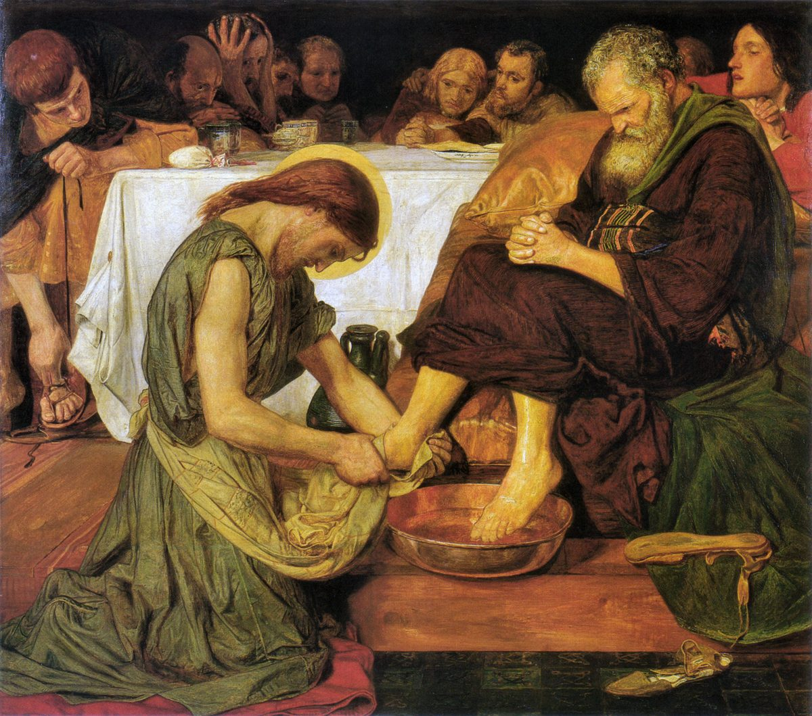

Filipenses 2 — La Traducción Mister

⚠ Jesús se arrodilla a los pies de un discípulo con una toalla a la cintura (Juan 13:5), la «forma de esclavo» del versículo 7 mostrada en un solo acto. Se informa que Brown pintó primero a Cristo desnudo hasta la cintura y que lo vistió después de que el cuadro fuera criticado.

tomando forma de esclavo,
llegando a ser en semejanza de hombres;
y hallado en su forma exterior como hombre,nota
y le concedió como favor el nombre
que está sobre todo nombre,nota
se doble toda rodilla,
de los del cielo, de los de la tierra y de los de debajo de la tierra,nota
Notas del traductor
«Si hay, pues, algún aliento en Cristo … alguna comunión en el Espíritu». Cuatro cláusulas con «si», y cada una da la cosa por cierta: hay aliento, hay consuelo. Paraklēsis es aliento o exhortación (diccionario). Koinōnia es la misma palabra que la «sociedad» de Filipenses 1:5 (diccionario); si pneumatos es el Espíritu que comparten o un espíritu humano compartido, el griego no lo marca. Splanchna es el «entrañable afecto» de Filipenses 1:8 (diccionario). La RV 1909 dice «si algunas entrañas y misericordias»; la TNM 1987 dice «si alguna participación de espíritu»; la NVI dice «si sienten algún estímulo en su unión con Cristo», y añade la «unión».
«Completen mi gozo: tengan el mismo sentir». Phroneō es poner la mente en algo, pensar de cierta manera; es el «piense» de Filipenses 1:7, viene dos veces en este versículo y otra vez en el v. 5, y en Filipenses 4:2 se exhorta a Evodia y a Síntique «a tener el mismo pensar en el Señor». «Tengan el mismo sentir unos hacia otros» es la instrucción de Romanos 12:16. Sympsychoi, «unidos en alma», está en un solo versículo del Nuevo Testamento, este. La RV60 dice «sintiendo lo mismo, teniendo el mismo amor»; la TNM 1987 dice «estando unidos en alma, teniendo presente el mismo pensamiento».
«Ambición egoísta … gloria vacía … considerando que los demás los superan». Eritheia, «ambición egoísta», está en siete versículos del Nuevo Testamento; en Filipenses 1:17 era el motivo de los predicadores rivales, y aquí se nombra como un peligro dentro de la congregación. Kenodoxia, «gloria vacía», y su adjetivo están en dos versículos: este y Gálatas 5:26, «No nos volvamos ávidos de gloria vacía». Tapeinophrosynē es la «humildad» de Efesios 4:2 (diccionario). Hyperechō, «superar», es el verbo de Filipenses 4:7, la paz que «supera todo entendimiento». La RV60 dice «estimando cada uno a los demás como superiores a él mismo»; la RV 1909 dice «estimándoos inferiores los unos á los otros»; la NVI dice «No hagan nada por egoísmo o vanidad».
⚠ «Tengan entre ustedes este sentir, que también está en Cristo Jesús». La segunda mitad de la frase no tiene verbo en griego, «esto, que también en Cristo Jesús», y los lectores la completan de dos maneras. La mayoría suple «hubo»: piensen como pensó Cristo, y las líneas siguientes son su ejemplo. Otros suplen «tienen»: piensen entre ustedes de la manera que corresponde a los que están en Cristo Jesús. Esta página conserva la apertura del griego y no elige. El texto bizantino dice «Porque haya en ustedes este sentir», y así la RV60: «Haya, pues, en vosotros este sentir que hubo también en Cristo Jesús»; la NVI dice «La actitud de ustedes debe ser como la de Cristo Jesús»; la TNM 1987 dice «Mantengan en ustedes esta actitud mental que también hubo en Cristo Jesús».
⚠ Versículos 6–11: ¿un himno? Estas líneas se disponen aquí como verso porque muchos lectores las tienen por un himno, quizá anterior a la carta, que Pablo cita; otros piensan que las escribió para este lugar. De un modo u otro se mueven en dos mitades: hacia abajo, de la forma de Dios a la muerte de un esclavo (v. 6–8), y hacia arriba, del «Por eso Dios» a toda rodilla (v. 9–11). Colosenses 1:15 comienza otro pasaje que a menudo se lee como himno. La división de versículos difiere entre ediciones: el texto crítico termina el v. 7 con «y hallado en su forma exterior como hombre», mientras que la RV60 comienza el v. 8 con ello: «y estando en la condición de hombre, se humilló a sí mismo».
⚠ «Existiendo en forma de Dios»: morphē. Morphē, «forma», está en tres versículos del Nuevo Testamento: Marcos 16:12 y los dos de aquí, «forma de Dios» y «forma de esclavo» (diccionario). Qué significa se discute: la figura exterior por la que se reconoce una cosa, o, como otros la leen aquí, la naturaleza misma. Las dos frases se oponen a propósito. La RV60 dice «el cual, siendo en forma de Dios»; la NVI dice «quien, siendo por naturaleza Dios»; la TNM 1987 dice «aunque existía en la forma de Dios».
⚠ «No consideró el ser igual a Dios como cosa que asir»: harpagmos. Harpagmos, de harpazō, «arrebatar», está en un solo versículo del Nuevo Testamento, este, y la frase gira sobre ella. Tres lecturas tienen larga historia. (1) Usurpación: la igualdad con Dios era suya por derecho, así que reclamarla no era robo; así la Vulgata, non rapinam arbitratus est, y la RV 1909: «no tuvo por usurpación ser igual á Dios». (2) Algo que arrebatar: no intentó alcanzar una igualdad que no tenía; la TNM 1987 dice «no dio consideración a una usurpación, a saber, que debiera ser igual a Dios», una traducción que concuerda con la enseñanza de los Testigos de que el Hijo no es igual a Dios. (3) Algo que retener o aprovechar: la tenía y no se aferró a ella ni la usó para sí; la RV60 dice «no estimó el ser igual a Dios como cosa a que aferrarse». El español «asir» abarca tanto alcanzar como sujetar, igual que el sustantivo griego, y esta página expone las lecturas sin elegir. «Igual a Dios» es la acusación de Juan 5:18, «haciéndose igual a Dios» (diccionario).
⚠ «Sino que se vació a sí mismo»: kénosis. Kenoō está en cinco versículos del Nuevo Testamento (diccionario); en todos los demás lo que se vacía o se anula es una cosa, como la fe que «ha sido vaciada» en Romanos 4:14, y solo aquí alguien se vacía a sí mismo. De qué, el versículo no lo dice; las frases que siguen dicen cómo: tomando forma de esclavo, llegando en semejanza humana. De este versículo toma su nombre la teología «kenótica», y hasta dónde llega el vaciamiento, si deja a un lado poderes divinos o solo rango y gloria, se discute. Algunos oyen detrás Isaías 53:12, donde el siervo «derramó su vida hasta la muerte»; el Antiguo Testamento griego usa allí otras palabras. La RV60 dice «sino que se despojó a sí mismo»; la RV 1909 dice «se anonadó á sí mismo»; la NVI dice «se rebajó voluntariamente», una lectura impresa como texto.
«Forma de esclavo … semejanza de hombres … forma exterior». Doulos es un esclavo (diccionario), la palabra que Pablo y Timoteo usan de sí mismos en Filipenses 1:1. Homoiōma, «semejanza», es la palabra de Romanos 8:3, «en semejanza de carne pecadora» (diccionario). Schēma es la figura que una cosa muestra desde fuera, la «forma de este mundo» de 1 Corintios 7:31 (diccionario); esta traducción escribe «forma» para morphē y «forma exterior» para schēma, para que las dos no se confundan en español. La RV60 dice «tomando forma de siervo»; la TNM 1987 dice «tomó la forma de un esclavo».
⚠ «Obediente hasta el punto de morir, y de morir en una cruz». Hypēkoos, «obediente», está en tres versículos del Nuevo Testamento: Hechos 7:39, 2 Corintios 2:9 y este. La última frase añade el peldaño más bajo: no solo la muerte, sino la cruz, la muerte de esclavos y rebeldes (diccionario). La RV60 dice «haciéndose obediente hasta la muerte, y muerte de cruz»; la NVI dice «¡y muerte de cruz!»; la TNM 1987 dice «muerte en un madero de tormento», una traducción doctrinal que se apoya en el sentido antiguo de stauros como poste vertical.
«Por eso también Dios lo exaltó por encima de todo». Hyperypsoō, elevar por encima, está en un solo versículo del Nuevo Testamento, este. «Le concedió como favor» es charizomai, el verbo de charis, la gracia. El texto crítico dice «el nombre»; el bizantino, «un nombre». Qué nombre, si «Señor» del v. 11, la palabra del Antiguo Testamento griego para el nombre divino, o «Jesús» del v. 10, o el nombre como rango, los lectores lo responden de modos distintos. La RV60 dice «Por lo cual Dios también le exaltó hasta lo sumo, y le dio un nombre que es sobre todo nombre»; la NVI dice «le otorgó el nombre que está sobre todo nombre»; la TNM 1987 dice «Dios lo ensalzó a un puesto superior».
⚠ «Se doble toda rodilla … toda lengua confiese»: Isaías 45:23. En Isaías 45 habla Jehová, y jura por sí mismo: en el hebreo, «ante mí se doblará toda rodilla, jurará toda lengua» (45:23); el Antiguo Testamento griego dice «toda lengua jurará por Dios». Pablo cita el mismo juramento en Romanos 14:11, del juicio de Dios: «ante mí se doblará toda rodilla, y toda lengua confesará a Dios». Aquí las rodillas se doblan «en el nombre de Jesús». Los lectores se dividen: muchos entienden que el himno da a Jesús el honor que Isaías reserva a Jehová; otros subrayan su última línea, «para gloria de Dios Padre», y leen a Jesús como exaltado por Dios y subordinado a él. Esta página expone ambas lecturas y no elige. Exomologeō, «confesar», es decir abiertamente (diccionario). La RV60 dice «para que en el nombre de Jesús se doble toda rodilla»; la TNM 1987 dice «reconozca abiertamente toda lengua».
«Del cielo, de la tierra, de debajo de la tierra». Tres adjetivos, de seres o de cosas: epouranios, el «celestial» de Efesios; epigeios, terrenal; y katachthonios, bajo tierra, que está en un solo versículo del Nuevo Testamento, este. Si nombran ángeles, vivos y muertos, o la creación entera, las formas griegas no lo deciden. La RV 1909 dice «de los que están en los cielos, y de los que en la tierra, y de los que debajo de la tierra»; la TNM 1987 dice «de los [que están] debajo del suelo».
«Que Jesucristo es Señor». Aquí kyrios se dice de Jesús, y esta traducción pone «Señor» (diccionario). Es la confesión de Romanos 10:9, «si confiesas en tu boca a Jesús como Señor», y de 1 Corintios 12:3, «¡Jesús es Señor!». La RV60 dice «que Jesucristo es el Señor, para gloria de Dios Padre»; la TNM 1987 dice «que Jesucristo es Señor para la gloria de Dios el Padre»; la Vulgata dice in gloria est Dei Patris, «está en la gloria de Dios Padre».
⚠ «Obren su propia salvación con temor y temblor; porque Dios es el que obra en ustedes». Katergazomai es llevar algo hasta su término (diccionario). El versículo se ha puesto frente a «por gracia son salvos, por medio de la fe … no por obras» (Efesios 2:8), y los lectores sostienen las dos cosas juntas de maneras distintas: el desarrollo de una salvación ya dada; el bienestar de la congregación, pues «su» es plural; o el obrar de Dios como fundamento del de ellos, que es lo que dice el versículo siguiente. Esta página expone las lecturas y no elige. El mismo verbo, energeō, se usa para el obrar de Dios y para el de ellos: Dios obra tanto el querer como el obrar. «A favor de la buena voluntad» no lleva «su» en griego; eudokia es la «buena voluntad» de Filipenses 1:15 (diccionario), y si es la de Dios o la de los lectores se lee de ambos modos. La RV60 dice «así el querer como el hacer, por su buena voluntad»; la TNM 1987 dice «por causa de [su] beneplácito», marcando la palabra que suple.
«Sin murmuraciones … hijos de Dios sin mancha en medio de una generación torcida y perversa». Gongysmos son las «murmuraciones» de Israel en el desierto, «vuestras murmuraciones no son contra nosotros, sino contra Jehová» (Éxodo 16:8; diccionario). La línea siguiente toma el cántico de Moisés: en Deuteronomio 32:5 Israel «ya no son sus hijos … una generación torcida y perversa», y en el Antiguo Testamento griego «hijos con mancha, generación torcida y retorcida». Pablo le da la vuelta: hijos de Dios sin mancha, en medio de esa generación. Diastrephō, «torcer», es la palabra de Lucas 9:41, «¡Oh generación incrédula y perversa!» (diccionario). Skolios, «torcido», está en cuatro versículos: Lucas 3:5, «lo torcido se volverá recto», Hechos 2:40, «esta generación torcida», este, y 1 Pedro 2:18. Akeraios, «inocente», está en tres versículos: Mateo 10:16 (ya en estas páginas), Romanos 16:19 y este. La RV 1909, del texto bizantino, dice «hijos de Dios sin culpa en medio de la nación maligna y perversa»; la RV60 dice «hijos de Dios sin mancha en medio de una generación maligna y perversa».
«Lumbreras en el mundo … aferrados a la palabra de vida». Phōstēr, «lumbrera», está en dos versículos del Nuevo Testamento: este y Apocalipsis 21:11, el resplandor de la ciudad santa. En el Antiguo Testamento griego es la palabra para las lumbreras de la creación, «Haya lumbreras en la bóveda del cielo» (Génesis 1:14). Epechontes puede significar «aferrados a» o «presentando», y se leen ambas cosas. «En vano» es eis kenon, que está en cuatro versículos; en Gálatas 2:2 Pablo temía «estar corriendo, o haber corrido, en vano», y en Gálatas 4:11 haber «trabajado en vano» con ellos. La RV 1909 dice «Reteniendo la palabra de vida»; la NVI dice «manteniendo en alto la palabra de vida»; la TNM 1987 dice «teniendo la palabra de vida asida con fuerza».
⚠ «Derramado como libación». Spendō está en dos versículos del Nuevo Testamento: este y 2 Timoteo 4:6, «ya estoy siendo derramado». La libación se derramaba sobre el sacrificio, como en Números 28:7 (diccionario). Si Pablo habla de su muerte, el último vino derramado sobre la ofrenda de ellos, o de su trabajo mientras vive, se lee de ambos modos. Leitourgia, «servicio», es servicio público y sacerdotal; Pablo se llama leitourgos en Romanos 15:16. Luego la alegría por partida doble: «me alegro, y me alegro con todos ustedes». La RV60 dice «Y aunque sea derramado en libación sobre el sacrificio y servicio de vuestra fe»; la NVI dice «Y aunque mi vida fuera derramada»; la TNM 1987 dice «aun si yo estoy siendo derramado como libación».
«Espero en el Señor Jesús enviarles pronto a Timoteo». Timoteo aparece junto a Pablo en Filipenses 1:1; se unió a Pablo en Hechos 16:1 (enciclopedia), y en 1 Corintios 4:17 Pablo lo envía como «mi hijo amado y fiel en el Señor». Eupsycheō, «estar animado», y isopsychos, «de alma igual», están cada uno en un solo versículo del Nuevo Testamento. Igual al alma de quién, de Pablo o de Timoteo, el griego lo deja abierto. La RV60 dice «del mismo ánimo»; la TNM 1987 dice «de disposición como la de él».
«Que se inquiete de verdad por lo de ustedes … todos buscan lo suyo». Merimnaō es el verbo de Filipenses 4:6, «No se inquieten por nada»; aquí es la clase de cuidado que conviene. Gnēsiōs, «de verdad», es el adverbio del «auténtico yugo-compañero» de Filipenses 4:3. Quiénes son «todos», la carta no lo dice. El texto crítico dice «Jesucristo»; Westcott–Hort y el texto bizantino dicen «Cristo Jesús», y así la TNM 1987: «no los de Cristo Jesús»; la RV60 dice «no lo que es de Cristo Jesús»; la NVI dice «y no los de Jesucristo».
«Carácter probado … como un hijo con su padre sirvió como esclavo conmigo». Dokimē es el «carácter probado» de Romanos 5:4 (diccionario). Douleuō es el verbo de doulos: también Timoteo ha tomado la parte del esclavo del v. 7. La frase gira mientras avanza: «como un hijo con su padre» hace esperar «me sirvió a mí», y Pablo escribe «sirvió conmigo». La RV60 dice «que como hijo a padre ha servido conmigo en el evangelio»; la TNM 1987 dice «sirvió como esclavo conmigo».
«Epafrodito, mi hermano y colaborador y compañero de milicia, y mensajero de ustedes». Epaphroditos está en dos versículos del Nuevo Testamento: este y Filipenses 4:18, donde ha traído el regalo de ellos (enciclopedia). «Compañero de milicia» es el título de Arquipo en Filemón 1:2. «Mensajero» es apostolos, la palabra para apóstol, aquí como en 2 Corintios 8:23, «mensajeros de las congregaciones» (diccionario); «servidor» es leitourgos, como en Romanos 15:16 (diccionario). La RV60 dice «vuestro mensajero, y ministrador de mis necesidades»; la TNM 1987 dice «enviado y siervo personal de ustedes para mi necesidad»; la NVI dice «compañero de lucha».
«Angustiado … enfermo, cerca de la muerte … tristeza sobre tristeza». Adēmoneō, «angustiarse», está en tres versículos del Nuevo Testamento: dos en Getsemaní, Mateo 26:37 y Marcos 14:33, y este. Epafrodito se angustia no por su enfermedad sino porque ellos se enteraron. «Lo envío» es un tiempo pasado en griego, escrito desde el momento en que se lee la carta; probablemente la llevó él. La RV60 dice «y gravemente se angustió»; la TNM 1987 dice «se siente abatido»; la NVI dice «está afligido».
⚠ «Jugándose la vida». Paraboleuomai está en un solo versículo del Nuevo Testamento, este; se informa que es una palabra de jugador, apostarlo todo a una tirada, y se informa que una hermandad cristiana posterior que cuidaba enfermos en Alejandría, los parabolani, tomó de ella su nombre. El texto bizantino dice paraboulesamenos, «habiendo desatendido»; la RV60 dice «exponiendo su vida»; la RV 1909 dice «poniendo su vida». El texto crítico dice «la obra de Cristo», Westcott–Hort «la obra del Señor», y así la TNM 1987: «a causa de la obra del Señor». «Lo que faltaba en el servicio de ustedes» no es un reproche: estaban lejos, y él vino en su lugar.
Patrones que vale la pena recordar
Donde esta traducción conserva las palabras exactas: «sociedad», la palabra de 1:5; «entrañable afecto», como en 1:8; «ambición egoísta», como en 1:17; «gloria vacía», como en Gálatas 5:26; «superar», como en 4:7; «forma» para morphē y «forma exterior» para schēma; «cosa que asir»; «vaciar», como en Romanos 4:14; «esclavo», como en 1:1; «semejanza», como en Romanos 8:3; «Señor» para Jesús en 2:11; «confesar», como en Romanos 14:11; «buena voluntad», como en 1:15; «murmuraciones», como en Éxodo 16:8; «torcida y perversa», como en Deuteronomio 32:5, y «perversa» como en Lucas 9:41; «lumbreras», como en Génesis 1:14; «libación», como en Números 28:7; «inquietarse», como en 4:6; «carácter probado», como en Romanos 5:4; «mensajero», como en 2 Corintios 8:23; y «angustiado», como en Marcos 14:33.
Ecos pagados. La ambición egoísta, sembrada en Filipenses 1:17 y vuelta contra la congregación; los esclavos de Filipenses 1:1, ahora la forma que toma Cristo; la sociedad y el entrañable afecto de Filipenses 1:5 y Filipenses 1:8; la alegría, una y otra vez; el juramento de Isaías tal como Pablo lo citó en Romanos 14:11; las murmuraciones del desierto de Éxodo 16:8; la generación torcida de Deuteronomio 32:5; las lumbreras de Génesis 1:14; correr en vano de Gálatas 2:2; la libación de Números 28:7; Timoteo de Hechos 16:1 y 1 Corintios 4:17; y la angustia de Getsemaní, Marcos 14:33.
Ecos sembrados. «Alégrense» en 3:1 y otra vez en Filipenses 4:4; «el mismo sentir» para Evodia y Síntique en Filipenses 4:2; Epafrodito y el regalo en Filipenses 4:18; considerar, el verbo de 2:3 y 2:6, cuando Pablo tiene sus ganancias por pérdida en 3:7–8; y forma y forma exterior juntas otra vez en 3:21, donde el cuerpo de la humillación es transformado a la forma de su gloria.
A continuación en este libro: Filipenses 3, ya en estas páginas. «Alégrense en el Señor», una advertencia sobre «los perros» y las ganancias que Pablo tiene por pérdida.